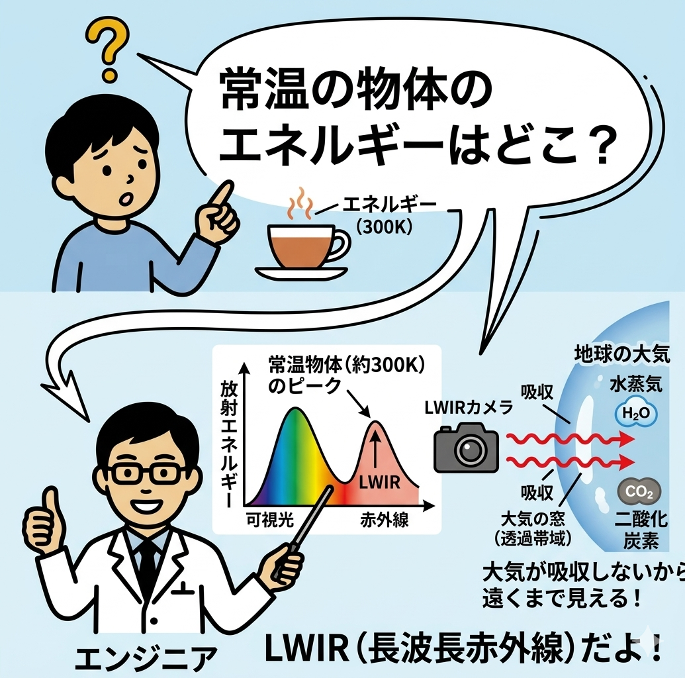
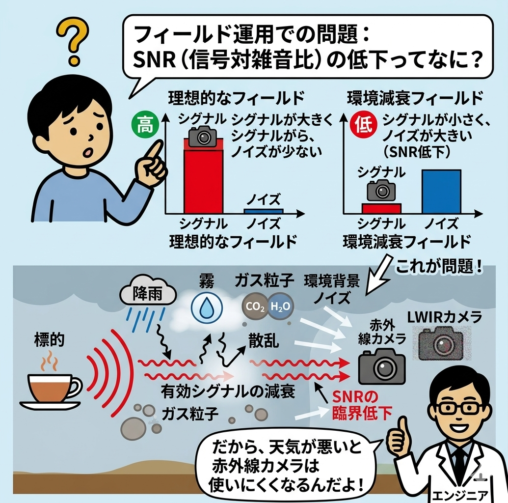
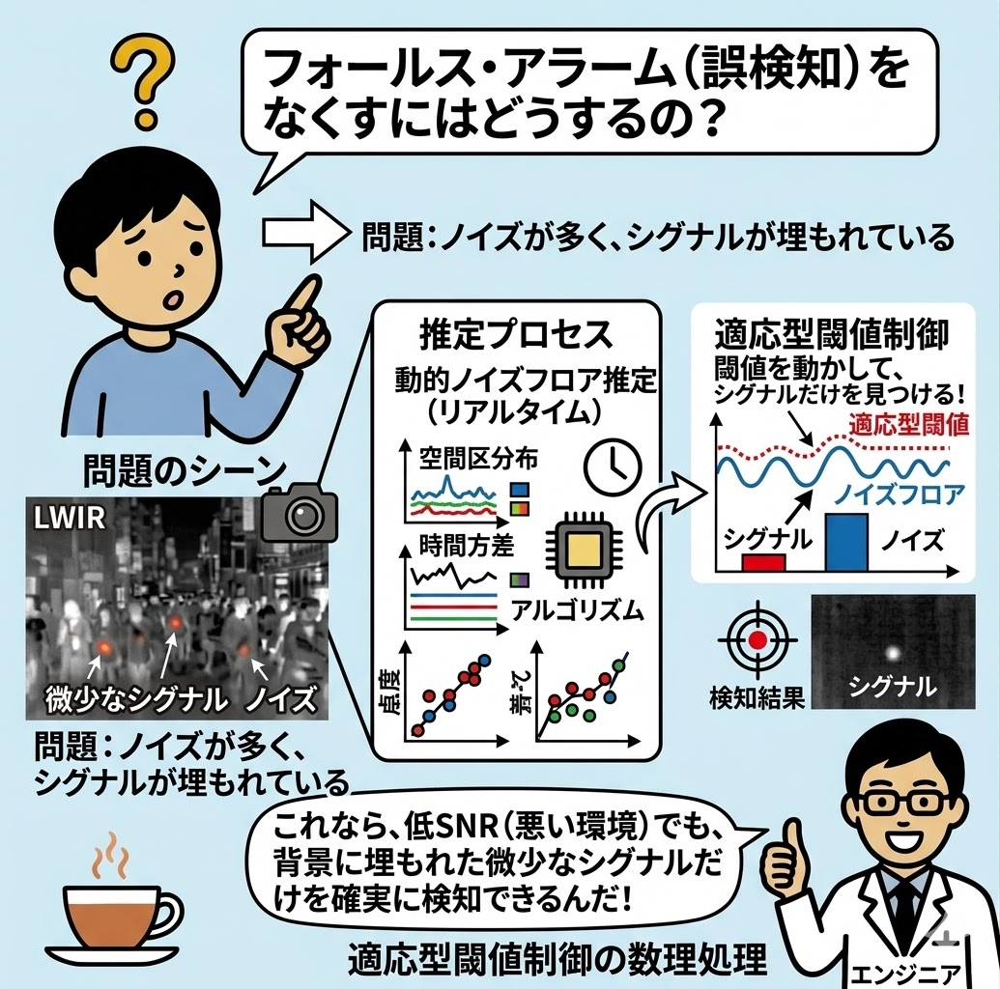
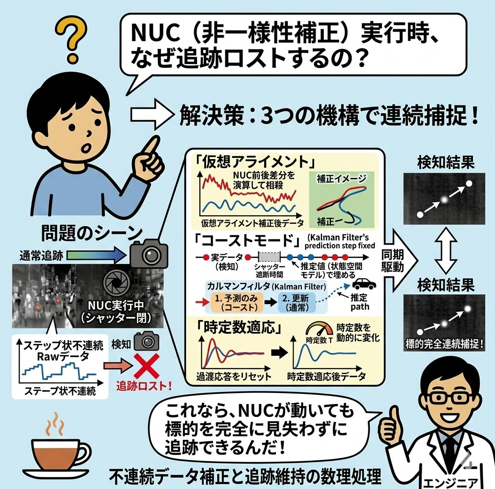

プロローグ：熱カメラの「目」は超繊細！
👧
アカリ（中学生）
サトウさん、この「非冷却マイクロボロメータ」っていう熱カメラ、すごいですね！でも、説明書を読んだら「大気の窓（8-14μm）」とか「ゲルマニウムレンズ」とか難しい言葉ばかりで頭がクラクラしてきました……。要するに、何がそんなにすごいの？
👨💻
サトウ（開発エンジニア）
ははは、確かに専門用語ばかりだよね。簡単に言うとね、このカメラは「人間の目には絶対に見えない『熱の色の違い』を見分けて、ドシャ降りの雨や霧の中でも、遠くの標的を絶対に逃さないカメラ」なんだ。
👧
アカリ（中学生）
熱の色の違い？
👨💻
サトウ（開発エンジニア）
そう。光には「波長」っていう長さがあって、それが色の違いになるんだ。人間が平熱（36度くらい）のときに出す熱は、赤外線の中でも「遠赤外線（LWIR）」っていう種類で、波長でいうと「8〜14μm（マイクロメートル）」の範囲。ここが一番きれいに空気を通り抜けるから、僕たちはここを「大気の窓」って呼んで、狙い撃ちしているんだよ。
技術原理の解説（大気透過透過帯域：LWIR）
赤外線カメラが標的とする常温物体（約300K）の放射エネルギーピークは、長波長赤外線（LWIR: 8-14μm）領域に存在します。
この帯域は地球大気を構成する水蒸気や二酸化炭素による吸収・散乱特性が低いため、一般に「大気の窓（Atmospheric Window）」と呼ばれ、遠距離での減衰を最小限に抑えた光学検出が可能な物理的土台となっています。

第1章：雨やガスは「大音量の雑音（ノイズ）」だ！
👧
アカリ（中学生）
狙い撃ちするなら簡単じゃないですか！その「窓」だけを見ていればいいんでしょ？
👨💻
サトウ（開発エンジニア）
それがね、現場（屋外）はそんなに甘くないんだ。晴れている日はいいけれど、ものすごい大雨（高湿度）の日や、工場で特定のガスが漂っていると、せっかくの「熱の光」が空気中で水蒸気やガスに吸い込まれて、カメラに届くまでにボロボロに減衰しちゃうんだよ。
👧
アカリ（中学生）
あ、そっか！光が弱くなっちゃうんだ。
👨💻
サトウ（開発エンジニア）
そう。これを学校の「英語のリスニングテスト」に例えてみよう。晴れの日が「静かな教室」なら、雨やガスの日は「すぐ後ろで工事のドリルが鳴り響いているうるさい教室」だ。これを専門用語で「SNR（信号対雑音比）の低下」って言うんだ。
👧
アカリ（中学生）
うわぁ、そんなうるさい場所じゃ、先生のヒソヒソ話（遠くの小さな熱）なんて全然聞こえない（映らない）よ！
技術原理の解説（環境減衰によるSNRの低下）
フィールド運用下において、降雨、霧（微小水滴）、特定のガス粒子は赤外線エネルギーを吸収・散乱（ミー散乱・レイリー散乱）させます。
この物理現象は、標的から放射される有効シグナル（Signal）を著しく減衰させる一方で、周囲の環境放射による空間的背景ノイズ（Noise）の相対比率を増大させるため、システム全体のSNR（信号対雑音比）が臨界点まで低下する要因となります。

第2章：カメラ自身が「合格ライン」をリアルタイムで変える！
👧
アカリ（中学生）
リスニングテストなら、うるさくて聞き取れなかったらみんな不合格になっちゃう。カメラはどうやって合格（検知）させているの？
👨💻
サトウ（開発エンジニア）
普通のカメラなら諦めて「検知漏れ」を起こすか、逆に雑音をターゲットだと勘違いして「誤作動」しちゃう。でも、僕たちのカメラには「動的補正ロジック」という天才的な脳みそ（アルゴリズム）が入っているんだ。
👧
アカリ（中学生）
動的補正……？
👨💻
サトウ（開発エンジニア）
カメラの脳みそは、ただ画像を見るだけじゃなくて、常に「今、画面全体のどこが、どのくらいノイズでうるさいか（ノイズフロア推定）」を計算しているんだよ。そして、こんな風にテストの合格ライン（閾値）をリアルタイムで書き換えるんだ。
サトウ（エンジニアの声）：
「よし、今は水蒸気のせいで9.2μmのエリアがザーザーうるさいぞ。ここはだまされやすいから、合格ライン（閾値）を少し高めにして、間違いを防ごう！」
「お、逆に10μmのエリアはノイズがなくてクリアだな。じゃあ、合格ラインを限界まで下げて、遠くのかすかな熱でも合格（検知）にしよう！」
「よし、今は水蒸気のせいで9.2μmのエリアがザーザーうるさいぞ。ここはだまされやすいから、合格ライン（閾値）を少し高めにして、間違いを防ごう！」
「お、逆に10μmのエリアはノイズがなくてクリアだな。じゃあ、合格ラインを限界まで下げて、遠くのかすかな熱でも合格（検知）にしよう！」
👧
アカリ（中学生）
すごい！場所や波長（色）ごとに、テストの点数の基準を自動で変えているんだ！
技術原理の解説（ノイズフロア推定と適応型閾値制御）
誤検知（フォールス・アラーム）と検知漏れを極限まで低減させるため、内部アルゴリズムは各画素および特定波長領域ごとの「動的ノイズフロア推定」を常時実行しています。
空間的・時間的なバックグラウンドノイズの分散度合いをリアルタイムにプロットし、検知閾値（スレッショルド）を変動させることで、低SNR環境下でも背景光に埋もれた微少なシグナルのみを確実に識別・抽出する数理処理を行っています。

第3章：最大のピンチ！「カメラの瞬き（NUC）」をどう乗り越えるか
👧
アカリ（中学生）
でもサトウさん、熱カメラって、ときどき「カシャッ」って音がして、一瞬画面が止まりますよね？あれは何？
👨💻
サトウ（開発エンジニア）
よく気づいたね！あれは「シャッターキャリブレーション（NUC：Non-Uniformity Correction）」っていって、カメラ自身の体温で画面がボヤけないように、一瞬目をつぶってカメラの目をリフレッシュ（校正）しているんだ。
👧
アカリ（中学生）
ええっ！せっかくうるさい中で一生懸命計算しているのに、一瞬でも目をつぶったら、パッと目を開けた瞬間に画面の明るさ（Rawデータ）が変わっちゃいません？リスニングテスト中に、一瞬耳を塞がれて、パッと離されたら、音量の変化にびっくりして前後の話が繋がらなくなっちゃう！
👨💻
サトウ（開発エンジニア）
まさにその通り！その瞬間にデータの段差（不連続）ができるから、移動しているターゲットを見失ったり、画面全体がバグったと勘違いする大きなリスク（技術的リスク）があるんだ。プロの現場ではこれが命取りになる。だから、僕たちは3つの必殺技を同期させているんだよ。
- 必殺技①：仮想アライメント（段差消し）
シャッターが開く直前と開いた直後のデータを見比べて、「よし、全体でこれだけデータがズレたな」というのを計算し、一瞬で引き算して、画像処理のアルゴリズムには「何事も起きませんでしたよ」と滑らかに騙して繋げるんだ。 - 必殺技②：コーストモード（未来予測）
シャッターが閉じてカメラが「目隠し」されている数フレームの間、ターゲットの追跡エンジンは「これまでのスピードと方向なら、今ここを走っているはずだ！」と未来予測（カルマンフィルタ）だけで追いかけ続ける。 - 必殺技③：時定数コントロール（脳みその切り替え）
目を開けた直後は、一瞬だけ「過去の記憶」に頼るのをやめて、今見えている最新の「空間の形」を優先して合格ラインを計算し直すんだ。
👧
アカリ（中学生）
なんだか、映画のスーパーパイロットの先読み運転みたい！
技術原理の解説（不連続データ補正と追跡維持）
NUC（非一様性補正）実行時の機械式シャッター開閉に伴うRawデータのステップ状不連続性は、後段の信号処理アルゴリズムにスパイクノイズとして検知され、標的追跡のロストを招きます。
本システムでは、NUCの前後差分を演算して相殺する「仮想アライメント」、遮断時間を状態空間モデルに基づく推定値で埋める「コーストモード（カルマンフィルタの予測ステップ固定）」、および過渡応答をリセットする「時定数適応」の3機構を同期駆動することで、動標的の完全連続捕捉を維持しています。

エピローグ：これがプロフェッショナルの技術
👧
アカリ（中学生）
なるほど……！ただ良いレンズやセンサーを使うだけじゃなくて、大雨やガスのノイズを計算して、カメラ自身の「瞬き」の瞬間まで完璧にコントロールしているからこそ、遠くのものを100%正確に見つけられるんですね。
👨💻
サトウ（開発エンジニア）
その通り。どんなにハードウェアが優秀でも、この「環境に合わせてリアルタイムに頭脳（ソフト）を動かすロジック」がないと、プロの現場では通用しないんだ。顧客のエンジニアの人たちに「なぜこのカメラはここまで正確なのか？」と聞かれたら、僕たちはこの論理的な仕組みを自信を持って説明するんだよ。
👧
アカリ（中学生）
よく分かりました！このカメラ、本当にカッコいい頭脳を持ってるんだなぁ！
総括：ハードウェアと数理ロジックの統合設計
熱カメラにおける環境耐性の向上とは、単にF値の明るいゲルマニウムレンズや高精細なセンサーを用いることのみでは達成されません。
大気伝搬特性、ノイズの動的推定、さらにNUC実行時の位相制御といった「境界物理をシミュレートした組み込みロジック」との統合的設計こそが、産業・セキュリティー分野で真に通用する高信頼性検知システムの最適解となります。
過酷な屋外環境を克服するための非冷却赤外線サーモグラフィ技術。その中核は、自然界の動的なノイズ変化とデバイス特有の周期変動（NUC）を完全に数値予測し、裏側で1秒間に何十回ものリアルタイム数理演算として最適化するフロントエンドおよびファームウェアの設計思想にあります。